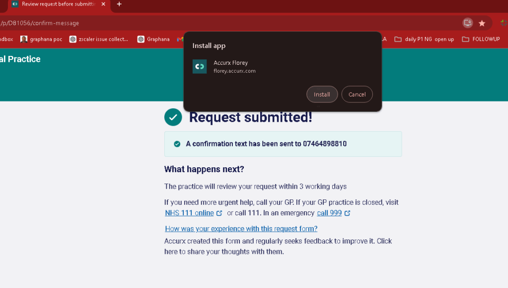

The Benefits of Installing Chrome-Based Web Apps ( PWA )

The Benefits of Installing Chrome-Based Web Apps
In today's digital age, convenience, accessibility, and efficiency are key factors in how we interact with online services. One way to enhance these aspects is through the use of Chrome-based web apps, also known as Progressive Web Apps (PWAs). You might have encountered a prompt while browsing, asking if you'd like to install a web app, similar to what is seen in the screenshot above. But why should you consider installing these apps? Let's explore the reasons.
1. Seamless Integration with Your Device
Chrome-based web apps offer a smooth integration with your device, whether you're using a desktop, laptop, or mobile phone. Once installed, these apps appear as standalone applications on your device, just like any other software, without requiring you to keep a browser tab open. This not only declutters your browser but also provides quick and easy access to your most-used services.
2. Offline Access
One of the standout features of Chrome-based web apps is their ability to work offline. While some functionality may be limited without an internet connection, many apps cache essential data and resources so you can continue to use them without being connected to the web. This is particularly useful for tasks such as reading articles, checking your calendar, or reviewing recent interactions when you're on the go or in an area with poor connectivity.
3. Enhanced Performance
PWAs are designed to offer a smoother and faster user experience compared to traditional websites. Since they operate independently of the browser once installed, they can run more efficiently. This means quicker load times and a more responsive interface, which can be particularly beneficial for services that you use frequently, like healthcare portals, productivity tools, or social media platforms.
4. Lower Resource Usage
Because Chrome-based web apps are streamlined for performance, they often consume fewer system resources than their full web counterparts. This can lead to improved battery life on mobile devices and reduced memory usage on desktops and laptops. If you're someone who tends to have multiple tabs open, installing web apps can help reduce the strain on your system.
5. Security and Updates
PWAs are built with security in mind. They use HTTPS to ensure secure communications and are updated automatically, ensuring you always have the latest features and security patches without needing to manually download and install updates. This reduces the risk of using outdated software and provides peace of mind when accessing sensitive services, such as online banking or healthcare portals.
6. Improved User Experience
Chrome-based apps often come with enhanced features that improve user experience, such as push notifications, background sync, and access to device hardware like the camera and GPS. These features allow web apps to behave more like native apps, offering functionalities like reminders, location-based services, and real-time updates that are integrated into your device’s operating system.
7. No Installation Hassle
Unlike traditional software that requires lengthy installation processes, downloading Chrome-based web apps is quick and easy. With just a single click, as seen in the screenshot example, the app is added to your device without the need for complex setups or configurations. This simplicity makes it easier for users who may not be tech-savvy to access and use the apps they need.
Conclusion
Installing Chrome-based web apps is a smart choice for those looking to enhance their digital experience. Whether it's the convenience of offline access, the improved performance, or the security benefits, PWAs provide a robust solution for modern internet usage. Next time you see a prompt asking you to install a web app, consider saying yes—you might just find it to be an indispensable tool in your daily online activities.
Imported from rifaterdemsahin.com · 2024